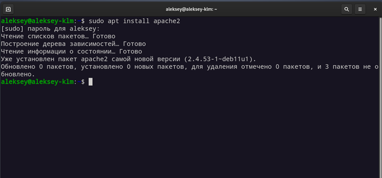
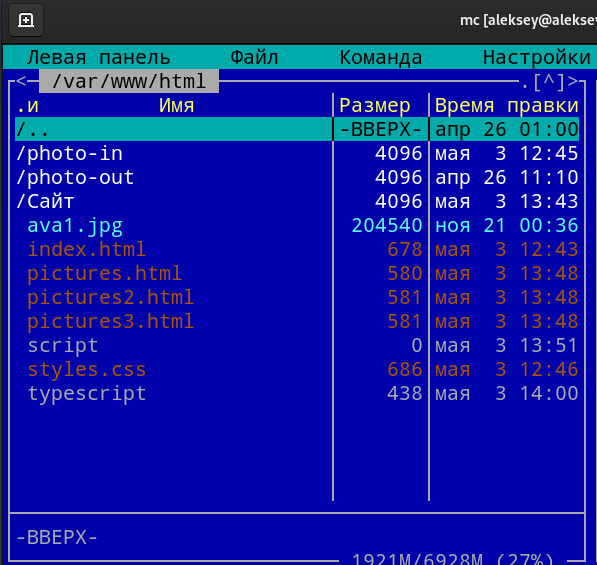

МИНИСТЕРСТВО ЦИФРОВОГО РАЗВИТИЯ СВЯЗИ И МАССОВЫХ КОММУНИКАЦИЙ РОССИЙСКОЙ ФЕДЕРАЦИИ
ФЕДЕРАЛЬНОЕ ГОСУДАРСТВЕННОЕ БЮДЖЕТНОЕ ОБРАЗОВАТЕЛЬНОЕ УЧРЕЖДЕНИЕ ВЫСШЕГО ОБРАЗОВАНИЯ
«САНКТ-ПЕТЕРБУРГСКИЙ ГОСУДАРСТВЕННЫЙ УНИВЕРСИТЕТ ТЕЛЕКОММУНИКАЦИЙ ИМ. ПРОФ. М.А. БОНЧ-БРУЕВИЧА»
(СПбГУТ)
Факультет информационных систем и технологий
Кафедра безопасности информационных систем
Лабораторная работа №7
по дисциплине: Архитектура информационных систем
на тему: «Изучение основ серверного и сетевого взаимодействия»
Выполнил:
студент гр. ИСТ-921
Клименко А.А.
Принял:
к.т.н., доцент кафедры ИКД
Громов В.В.
г. Санкт-Петербург
2022 г.
Цель работы: изучить основы веб-серверов (apache2), autoFTP (FileZila client, FileZila server). Написать скрипт для сжатия фотографий для более быстрой загрузки на веб странице.
Ход работы
1. Развертывание сервера apache2 в ОС Linux
Apache – это свободное программное обеспечение для размещения веб-сервера. Он хорошо показывает себя в работе с масштабными проектами, поэтому заслуженно считается одним из самых популярных веб-серверов. Кроме того, Apache очень гибок в плане настройки, что даёт возможность реализовать все особенности размещаемого веб-ресурса.
Для того, чтобы сервер заработал, достаточно установить пакет через apt и активировать его службу, после чего, самый простой сервер уже будет функционировать (рисунок 1-2). Чтобы проверить работает ли сервер, можно открыть в браузере сайт по адресу узла (127.0.0.1). Для настройки доменного имени, надо зайти в конфигурационный файл /etc/hosts (рисунок 3).
Также существуют другие конфигурационные файлы:
- Файл /etc/apache2/apache2.conf отвечает за основные настройки
- /etc/apache2/conf-available/* - дополнительные настройки веб-сервера
- /etc/apache2/mods-available/* - настройки модулей
- /etc/apache2/sites-available/* - настойки виртуальных хостов
- /etc/apache2/ports.conf - порты, на которых работает apache
В данной работе удалось установить и развернуть apache, но данный сервер работает только в локальный сети. Для того, чтобы сервер стал доступен не только во внутренней сети – нужно покупать ip адрес у провайдера и доменное имя.

Рисунок 1 – установка и проверка службы
Рисунок 2 – открытый сайт
2. Интеграция веб-сайта на сервер
Для интеграции будет взят сайт, который был написан заранее. На сайте располагается основная информация о разработчике и отдельная страница для расположения фотографий, которая разделена еще на 3 страницы.
Для того, чтобы развернуть свой веб-сайт существует два способа. Первый это просто положить сайт в каталог /var/www/html. Второй это в конфигурационных файлах поменять путь до сайта. Второй чаще всего используется, когда надо выложить сразу несколько веб-сайтов, потому что в конфигах, можно указывать сколько угодно путей до сайта и доменных имен для них.
В данной работе будет использоваться первый способ (Рисунок 4).

Рисунок 4 – интегрированный сайт
3. Сжатие картинок для сайта
При загрузке картинок на сайт, стоит учитывать их размер и разрешение. При загрузке большого количества изображений с высоким разрешением могут появляться провисания и долгая загрузка картинок. Чтобы такого избежать, нужно сжимать фотографии, но так, чтобы не сильно ухудшалось качество.
Для этого была выбрана утилита imagemagick.
ImageMagick — набор программ (консольных утилит) для чтения и редактирования файлов множества графических форматов. Является свободным и кроссплатформенным программным обеспечением.
Существует две основных команды для сжатия:
- convert <входное изображение> -quality 40 <полученное изображение> - сжимает по одному
- modrify <каталог с изображениями> -quality 40 <полученное изображение> - сжимает все в каталоге
Для данной задаче отлично подходит первая команда, так-как надо было выбрать определенной имя для каждого изображения. Цифра 40 указывает какой сжатие должно быть. 100 – это оригинальное изображение, чем ниже, тем больше сжатие.
Для упрощения работы, написан простейший скрипт, который перебирает все фотографии в директории и сжимает их, отправляя в другую.
Далее представлен листинг кода.
cd photo-in
name=1
for image in *.*;
do
convert $image -quality 30 ../photo-out/$name.jpg
echo $name
let name=name+1
done
Время выполнения данной скрипта 34 секунды. Время зависит от силы сжатия и количества картинок. На одно изображение уходит примерно 0.7 секунды. Размер же уменьшается больше чем в два раза.
После выполнения скрипта, изображения загружаются на странице достаточно быстро и практически не видно процесса их загрузки.
4. Символ & в bash
Есть случаи, когда нужно запустить какой-то процесс и сразу продолжить работу с другими. В обычном режиме, если запустить скрипт, то нельзя ничего делать в терминале, пока он не завершится. Для таких случаев существует специальный символ &, который нужно написать после команды.
5. autoFTP сервера и клиентская часть
Для базовой настройки ftp сервера нужно установить пакет vsftpd. После чего для базовой конфигурации будет включен режим анонимного пользователя, чтобы не создавать пользователей. Для этого в файле конфигурации /etc/vsftpd.conf поставить флаг anonymous_enable=YES. После чего нужно перезагрузить сервер командой sudo systemctl restart vsftpd.
FTP сервер очень удобны для доступа к файлам в локальной сети с разных компьютеров, но это не единственное применение. Часто FTP сервер использует для хранения файлов и скачивания их через веб-сервер со странички сайта.
FTP может работать с двумя видами файлов – бинарные и текстовые (ASCII).
Текстовый (ASCII). Используется для передачи текстовых данных, например HTML, php скриптов, perl скриптов, а также css и JS файлов.
Бинарный (BINARY). Изображения и бинарные файлы передаются в этом режиме.
Выбрать правильный режим передачи данных очень важно. Например Perl скрипты не будут работать на сервере, если их загрузить в бинарном режиме. Большинство современных клиентов FTP умеют автоматически определять необходимый режим для загрузки файлов.
6. Команды ftp
Для начала фтп соединения достаточно ввести команду ftp <сервер>.
Команды для навигации:
- pwd – текущая директория на сервере ftp;
- ls – список файлов;
- cd – переход в директорию;
- mkdir, rmdir – cоздание и удаление директории.
Для удаления на сервера – delete <имя файла>.
Для скачивания используется команда get <имя файла>. Для скачивания нескольких файлов, можно использовать команду mget.
Для загрузки файлов есть команда put для одного файла и mput для нескольких.
Чтобы изменить текущую директорию на локальной машине, существует команда lcd <путь>.
7. Команды rsync, wget и wpul
Для работы с файлами на удаленном устройстве используется несколько команд. Для загрузки используется wget, куда передается адрес файла по http/tcp или ftp. Для отправки используется wpul.
Rsync используется для синхронизации каталогов. Для того, чтобы настроить сервер rsync, нужно установить (sudo apt get install rsync) и активировать службу. Подключение может осуществляется двумя способами – либо с помощью демона, как удалённый сервер и подключаться по ip, либо же по ssh. Основной файл конфигурации находится в /etc/rsyncd.conf.
Далее представлены примеры ключей:
- -v, -verbose – при работе утилиты на экран выводятся отладочные данные;
- -q, -quiet – отображение ошибок на экране запрещен;
- -c, -checksum – сравнивается контрольная сумма документов, а не дата-время;
- -a, -archive – подключение системы сжатия информации;
- -r, recursive – активируется рекурсивное резервирование;
- -b, -backup – утилита делает резервные копии файлов-оригиналов;
- -backup-dir=<каталог> – директория, куда будут «складываться» архивы;
- -suffix=SUFFIX – дополнение к имени файла, задаваемое при переносе в резервный каталог;
- -u, -update – программа пропустит документы с более поздним временем обновления;
- -progress – включается отображение уровня прогресса процедуры;
- -delete – система удаляет файлы, если они исчезли из списка копирования;
- -exclude=<имена файлов> – перечень документов, удаляемых из очереди синхронизации.
Вывод: в данной работе удалось создать веб-сервер apache для работы сайта. Установка и настройка достаточно простая, самая большая сложность — это открыть сайт для всеобщего доступа.
Также был написан простой сайт с информацией и массивом изображений. Было выяснено, что большое количество «тяжелых» изображений делают долгую загрузку сайта и требуют очень много памяти на сервере. Чтобы избежать этого был написан скрипт для сжатия изображений с помощью imageMagick.
В завершении работы был создан простой ftp сервер, который в дальнейшем пригодится для скачивания документов
с сайта и с помощью rsync удалось синхронизировать каталог с
удаленного